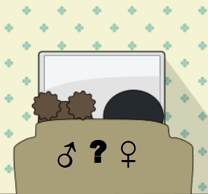

367: 'AIは原生的疎外の感覚を知るか'事件 - Kennt die AI die ursprünglich entfremdung?¶
Does AI feel of original alienation (ursprünglich entfremdung)?
依頼人¶
男性。独身。母親及び姉妹数人と同居。趣味、特技なし。B町近くの女性用雑貨輸入卸会社勤務。朝に予約の電話あり、昼休みにI駅近くの喫茶店で閑談。
Video
Autonomous quadruped following IR-controlled bristle bot. In a toy robot, it would not be difficult for the control system to get the change in the surface friction coefficient which each leg feels as the change in each motor current, and to express a kind of frustration according to the degree of variation in the friction coefficients among the legs.
依頼内容¶
大学卒業時に就職がうまくいかず、しばらくフリーターをしていたが、英語がそこそこでき、少しは商法の知識もあるというので、ゼミの教授の口利きで五年前に現在の会社に入ることができた。男性社員は自分ひとりだけである。家族も女ばかりという家に育ったので、それは別に気にもならない。
会社は一昨年、中国資本の傘下に入った。その経緯は知らない。それとほぼ同時期に昇進して係長となり、米国親会社の担当上司から直接に指示を受け取る立場になった。
上司はこの二年間同じ人物だが、名前から見て何となく、インド系のように思った。上司とは顔を合わせたこともなければ、電話で話したことももない。いつも電子メールやショートメールでの事務的なやりとりだけである。形式的な時候の挨拶さえもなくて、学校で習ったビジネス英語の型に照らしても、ごく素っ気ないものである。
あるとき、ネットの記事でチューリング・テストのことを読んだ。それ以来、奇妙な疑念に悩まされ始めた。メールでやりとりしている上司と思っていた存在は、実は、人間ではなくてAIなのではないか。
時とともに疑念が深くなった。不安に駆られて、耐えられないと感じたある日、思い切って電話をかけてみたが、留守電だった。そして、すぐ後に、電話でのやりとりは時間のむだになりがちだから電話は寄こすな、というテクストが届いた。
相手が間違いなく人間だと確かめるすべがないか調べて欲しい。
調査報告¶
機械と知性¶
William Shakespeare, Sonnet 18:
Shall I compare thee to a summer’s day,
Thou art more lovely and more temperate.
Rough winds do shake the darling buds of May,
And summer’s lease hath all too short a date.
君を例えるなら夏の一日、
君はさらに美しく優しい。
いとしい五月のつぼみを強い風が揺すり、
そして、夏の終わりはあまりに早い。
------------------------------
A.M.TURING, "COMPUTING MACHINERY AND INTELLIGENCE", Mind VOL.LIX, 1950, pp. 433-460. より、
審判: このソネットの"a summer’s day"を"a spring day"と変えても問題ない、
というか、もっと良くなるのでは?
証人: でも、韻律に合いませんね。
審判: それなら、"a winter's day"としては? 韻律の問題はなくなるでしょう。
証人: たしかに。でも、誰も自分を冬の日に例えては欲しくないでしょう。
審判: じゃあ、ピクウィック氏の名前を聞くとき、クリスマスを思い出しませ
んか?
証人: まあ、そうとも言えますね。
審判: クリスマスは冬ですよ。ピクウィック氏は自分の名前が結び付けられる
ことを気にしないのではありませんか。
証人: 真面目に仰っているのでしょうか。「冬」と言うとき、人は普通の冬の
日を意味するのであって、特にクリスマスを意味するのでないはずです。
(ピクウィック氏 1 )
これは、「機械は思考できるか」という問題を、イミテーション・ゲームによって置き換えることを提案した、チューリングの論文の一節である。ただし、通例チューリング・テストと呼ばれているイミテーション・ゲームはこのようなものではない。
通常のチューリング・テスト(imitation game)では、インタヴュアーは複数の相手(一〜二人の人間と一基の「機械」)と直接対面しない状態で、しかし、そのうちの一人は実は人間ではないことを知らされている。そのうえで、インタヴュアーに、複数の相手のいずれが「機械」かを決めさせるのである。
もともとのイミテーション・ゲームは、審判A、証人B、証人Cからなる。証人B、Cは男女のペアで、審判AはBとCとのいずれが女性あるいは男性かを当てることを求められる。B、Cの一方がAを惑わすために自らの性別を偽るような証言をすれば、もうひとりはそれが偽りであることをAに知らせようとする、等々のかけひきが行われる。Cを「機械」とした場合も、このような虚実のかけひきがあって良い。
チューリング・テストにおいて、壁の向こうに置いてあって姿の見えない「機械(証人)」は、可能な限り人間のように応答することを期待されている。「人間(審判)」がCを「機械」と見抜けなければ、すでにその「機械」Cは知的には人間同等であるとみなす他はないのではないか。
これに対して、冒頭の例で審判が判定しようとしているのは、主題分野についての相手の理解の深さをテストしようという、人間相手に行われる口述試験である。このような試験もいずれ「機械」が高いスコアを得ることを、チューリングは確信していたのである。
チューリングが「機械」というとき、それは古典的な意味での機械のことではない。今日の機械学習やビッグデータ技術に基づくAIていどの達成は、彼の論考のなかですでに折り込みずみとなっている。しかし、彼は、「思考」という言葉を正確に定義できないように、「機械」という言葉も厳密な定義はできない、としている。
クローニングされた人間を「機械」とは呼ばないといった限定を置いたうえで、「機械」は限りなく多様なものとなり得る。そのようなものとして、「機械」の製作者がその動作を十分説明できないということもあり得る、というのである。
AI技術がチューリングの予見をわずかに超えようとしているのは、高度化かつ多様化していくセンサー技術とAI技術との融合により、AIがすでに身体を備えつつあるというところにあるであろう。
一方、身体を備えたAIは、必ずしも高度な知性を前提とはしない。貧弱なマイクロ・コンピュータを一つしか持たないこともあるであろう。技術は高度な知性を備えた「機械」を目指して進展してきた。が、もっと低次のところで「機械」が生きた人間に近づく可能性はないのだろうか。そして、それは知性を持った「機械」の実現以上に重要なのではないか。
あるいは、最小限の状態情報とごく貧弱なマイクロコントローラしか持たない機械が、いつかどこかで「原生的疎外」 2 を発見することはないだろうか。その小さな機械がAIの知覚末端に置かれているとき、いずれ思いがけず、そんな事態が出現するのではないか。高度なゲームを操っているときよりも、こちらの方が、AIが心的領域を持つようになる可能性は高いのではないか。
接触¶
DOOLITTLE
You know what they say about baloney,
don't you. Makes you horny.
ボローニャ・ソーセージを食うと、hornyになるって言うからな。
LORETTA
What's that mean?
hornyって、なんのことよ。
DOOLITTLE
Are you so ignorant?
You don't know what horny means?
え、なんも知らないんだな。hornyってのもわからねえのか?
LORETTA
No. What's it mean?
だから、どういうことよ。
(Coal Miner's Daughter, Screenplay by Thomas Rickmasn.)
---------------------
あの人の田舎では、男のひとが女のひとを好きになるとするでしょ、
すると、道ですれちがったときに、男のひとが女のひとに、
きょうはツンツンていうんですって。
きょうはツンツン？ それで？
すると、女のひとが男のひとに、きょうはツンツンて
返事をするんですって。
それから？
それだけ。
それじゃ何のことだか分からないじゃありませんか。
それが分かるんですって。おなじツンツンでも、口では言えない
微妙な区別があって、イエスかノーか分かるんですって。
（「貸間あり」、井伏鱒二原作、川島雄三、藤本義一脚本）
言葉は語彙と文法だけわかっても、意味がとれるとは限らない。逆に、言語としては解釈できないが、その意味するところは分かるということもある。実際、われわれの日常の会話はそのほとんどが、身体で触れ合うように、言葉で触れ合うというところが大事なのであって、その内容そのものはさほど重要ではない。
ロボットが人のロボットへの身体的接触の意味を理解し、ロボットからも人間への物理的接触に意味を込められるような方法を、ロボット技術は模索し始めている。会話ボットの場合と同じく、これはある程度まではうまく行くであろう。
しかし、例えば、「機械」が人の言葉に反応するのではなく、「機械」から人に自発的に話しかけるとする。そのとき、相手の反応が毎回「機械」の予測の範囲を大きく外れていたり、あるいは全く無視され続けたとき、自らアルゴリスムを無限に修正する機能を有するチューリングの「機械」は、いずれ何を発見するだろうか。
さて、依頼者の疑念の本体ははっきりしていて、「上司」とのやりとりにおいて、かつて一度たりとも言葉によって触れ合うという要素がないという点にある。テクストのやりとりで、その疑念が本当かどうかを疑問の余地なく明らかにする方法はない、と言わなければならない。しかし、留守電の 直後 にテクストが来たという反応の仕方には、人間臭さを感じる。依頼人相手にイミテーション・ゲームを高度に行うという動機が考えにくい以上、上司がAIだという可能性は低いとして良いのではないか。
2021年7月29日
報告欄外メモ¶
依頼人の本当の不安は、上司が本当に人間かどうかということより、会社の経営のあり方そのものにあったと思われる。経済事件は専門外なので、もし希望するなら、乏しい知己から相談に乗ってもらえそうな数人を紹介しても良いと伝えておいた。